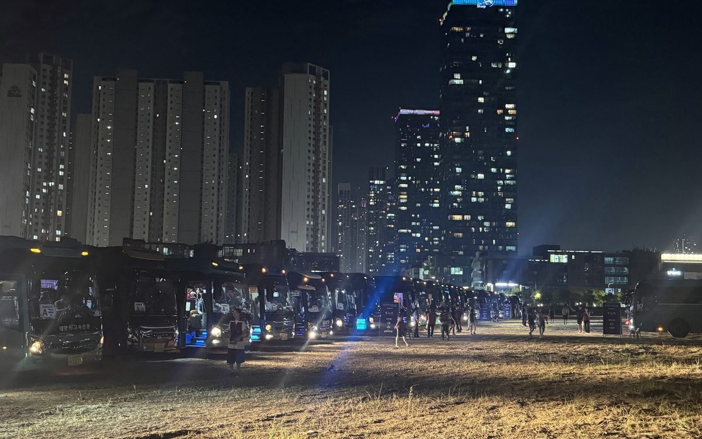
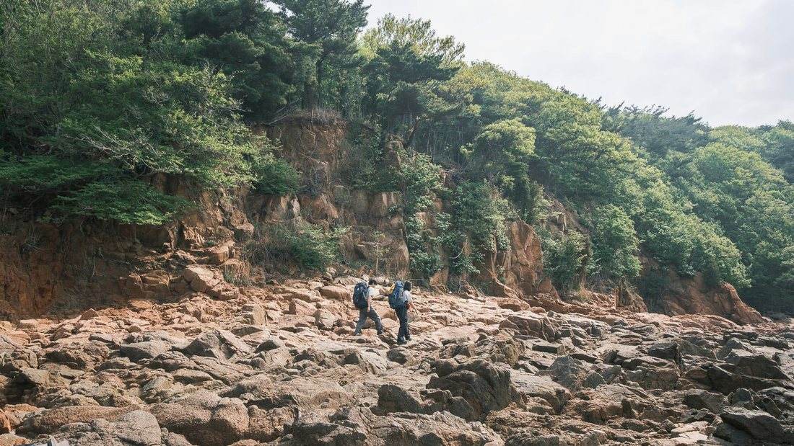
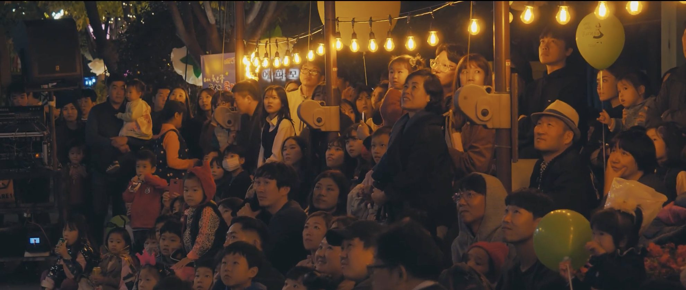
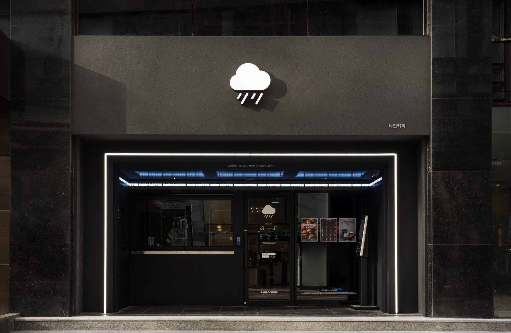
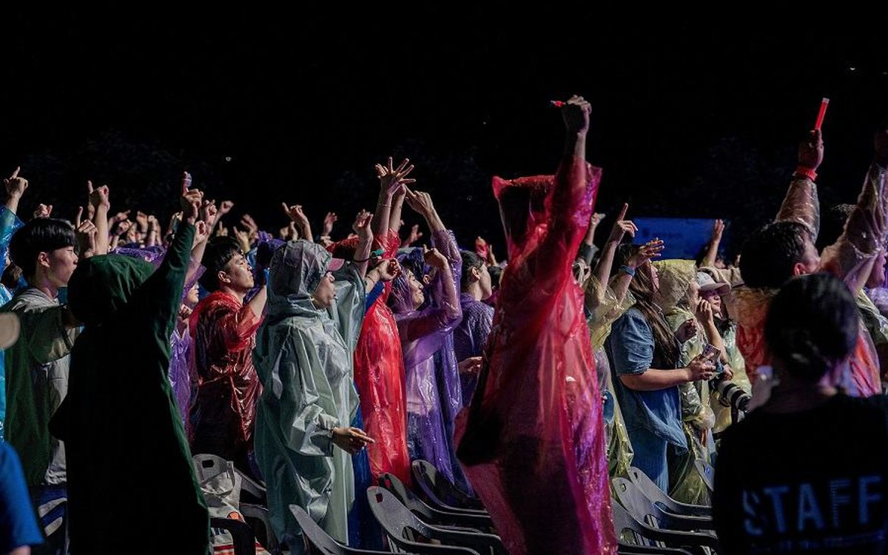
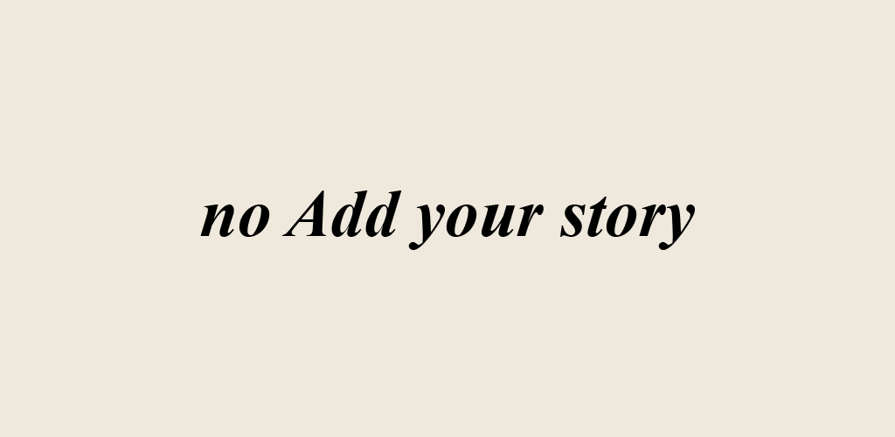

// SELECTED WORK
기획부터 현장 운영까지 직접 완수한 프로젝트
각 프로젝트는 직접 기획·운영하고 정량 성과로 마무리한 결과입니다.
기여도와 핵심 지표를 함께 적었습니다.
BRAND // EXPERIENCE기여도 100%

펜타포트 락 페스티벌 셔틀 운영
3일간 대형버스 340+대, 1만여 명, 13개 노선 38개 행선지. 전년도 타사 3시간 지연 민원을 '정시 출발·고객 만족'으로 뒤집은 오프라인 경험 설계.
만족도 72.6% · 민원 0회자세히 →
BRAND // AMBASSADOR기여도 80%

몽벨 아웃도어 크루 캠페인
'체험단'이 아닌 '크루' 구조로 설계해 자발적 참여를 유도. 1·2기 각 3회차, 1박 2일 백패킹으로 차별화. 팬을 UGC 생산자로 전환.
경쟁률 70:1 · UGC 30+자세히 →
BRAND // FESTIVAL기여도 100%

이상한 나라의 큰애기 축제
1억 2천 예산으로 울산 중구청 IP '큰애기'를 활용한 가족 축제 기획·총감독. 회전목마·코스프레 이벤트 등 와우 포인트로 거리 방문객 유도.
방문 15,000명 · 대상자세히 →
DIGITAL // BRAND LAUNCH기여도 90%

레인커피 런칭 · 온·오프라인 캠페인
글로우서울 첫 프랜차이즈 '레인커피' 강남역 직영점 런칭. B2C 화제성과 B2B 가맹 관심을 동시에 노린 온·오프라인 캠페인 — 할인 프로모션·인플루언서 데이·SEO·PR.
가맹 29팀 · 릴스 13만회자세히 →
DIGITAL // PR기여도 100%

제천국제음악영화제 홍보·마케팅
전년도 30% 인원으로 매체 노출과 관람객 인지도를 높이는 게 과제. 인스타→리틀리→홈페이지 고객 여정 설계, 미디어 커뮤니케이션 전반 담당.
보도 448건 · 매체 +400%자세히 →
DIGITAL // COMMUNITY기여도 100%

뉴미들클래스 브랜드 마케팅
오프라인 커뮤니티의 본질인 재구매를 위해 밀착 멤버십을 설계. 매월 오픈 이벤트와 타겟 메타 광고로 감도 높은 브랜드 경험을 유지.
재구매 57.2% · 참여 18,896명자세히 →
DIGITAL // FUNNEL기여도 100%

노애드 마케팅 · 앱 런칭
리브랜딩 기반으로 SNS·홈페이지·앱 온드 채널을 운영. 베타·구독자 차등 포인트, 다이나믹 링크로 획득→구매까지 퍼널을 설계.
재구매 70.3% · 앱전환 69.3%자세히 →